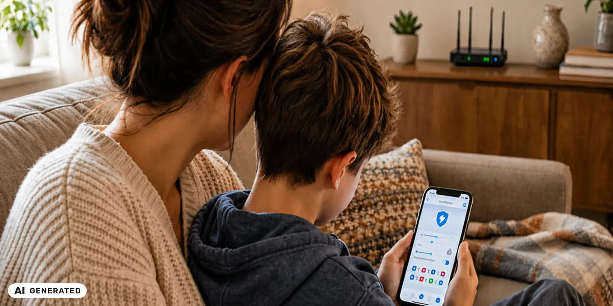

Una guida pratica di Fabio Muzzi
Parental control in famiglia
Sono Fabio, papà e professionista del digitale. In questa guida ti accompagno, un passo alla volta, a proteggere la rete di casa, gli smartphone e le SIM dei tuoi figli. Non serve essere esperti.
9 moduli15-30 minuti l'unoGratuita, senza pubblicità
Inizia dal modulo 0Vedi il percorsoScarica il corso in PDF (in arrivo)